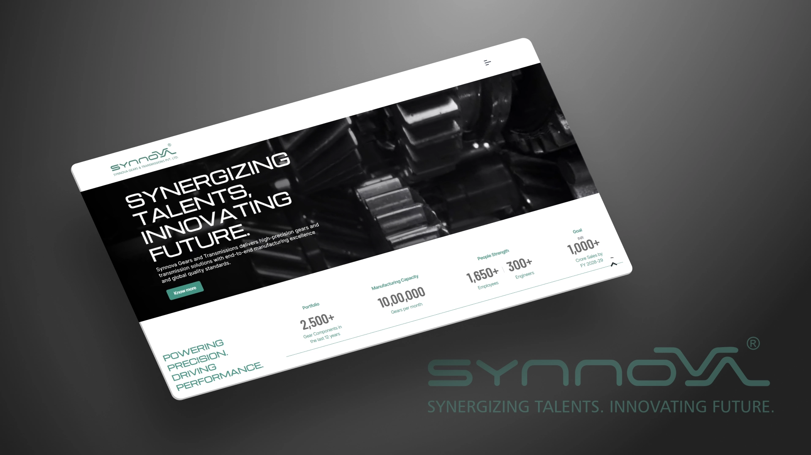

Synnova Gears & Transmissions
A website redesign for a tractor-gear manufacturer, done with the team at Cognito, India. I designed the desktop and mobile interface in Figma, keeping the brand’s industrial identity.
View project (opens in a new tab)